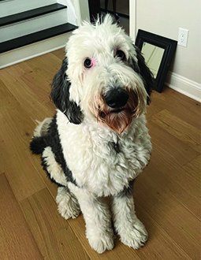

Murphy

Brain Surgeon
Contact
Email: murphythesheepadoodle@mac.com
Phone: (555) 704-4887
Location: Harrisonburg, VA
LinkedIn: linkedin.com/in/MurphyPettit
Brain Surgeon
Compassionate and skilled brain surgeon with years of experience performing complex neurological procedures.
Graduated Summa Cum Laude from Trinity College, Dublin, and currently serving as Lead Brain Surgeon at Sentara Hospital.
Known for precision, quick problem-solving, and dedication to improving patients’ lives.
Skills
- Excellent Surgeon
- Herding dog
- Fluent in French & Mandarin
- 100 pounds
Education
Trinity College – Doctorate Degree
Dublin, Ireland (2012-2021)
Graduated Summa Cum Laude
TA for biology, anatomy, & chemistry classes
Experience
Sentara Hospital - Lead brain surgeon
Harrisonburg, VA (2021–Present)
Really good at brain surgery and pretty much everything
Saves so many lives and makes everyone smarter after
Sentara Hospital Website: Sentara Health